ホーム → 補論 → 文法 → 日本人のための日本語 → 日本人のため：5
これまでに、日本語文の中心となる述語について、第３章で自動詞と他動詞、第４章でボイスを扱ってきました。このボイスの形式の次に現れるのがアスペクトという形式になります。ボイスが英語の“Voice”であったように、アスペクトも英語の“Aspect”をカタカナにしたものです。日本語訳に載っている「局面」や「側面」という意味の他に、文法用語で「相」と訳されます。簡単に説明すると、動きのいろいろな段階を表す形式を総称して、アスペクトと呼んでいるんです。動きのいろいろな段階とは、どんなことだろうと思われるかもしれませんね。具体的に説明しましょう。
たとえば、仮に「絵を描く」という動作を考えてみることにします。この動作を時間の流れのなかで考えていくと、まず、絵を描こうとする段階が想定されますね。このような段階は、動作がはじまる直前ですから、「これから絵を描くところだ」と言えますね。そして、「絵を描きはじめる」という開始の段階があります。それから、「絵を描いている」という進行の段階があります。ある一定の時間が過ぎると、「絵を描きおわる」という終了の段階が来て、動作は終わります。動作が終わっても、描いた作品が残っていれば、「絵が描いてある」とも言えますね。このような一連の動作の段階を表すのが、アスペクトということになるのです。下線を引いた部分がアスペクトの形式になります。
図で表すとわかりやすいので、ご覧になってください。なお、この図では、動作の始まりから終わりまでが点線で、動作の結果が細い点線で示してあります。
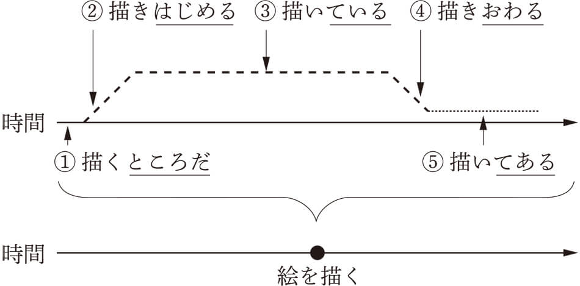「（絵を）描く」という動詞は過去・現在・未来という時間軸のなかで、一つのまとまった事態としてしか、動きを表せません。そのようなまとまった一つの動きを細かく切り分け、一つ一つの段階として表すのがアスペクトなんですね。アスペクトの表現によって、点であった動きがさまざまな面でとらえられることになり、動詞の表す内容が飛躍的に増えるわけです。いわばマクロの視点からミクロの視点になるとも言えるんです。ロシア語などのヨーロッパ言語には、アスペクトだけを表す独自形式を持つものがありますが、日本語では、他の品詞を借りるかたちで動詞について、アスペクトを表します。①であれば、「ところ」という名詞、②～⑤であれば、「はじめる」「いる」「おわる」「ある」という動詞が補助的についてアスペクトの段階を表します。日本語の主なアスペクトの形式をまとめましたので、以下の表をご覧になってください。
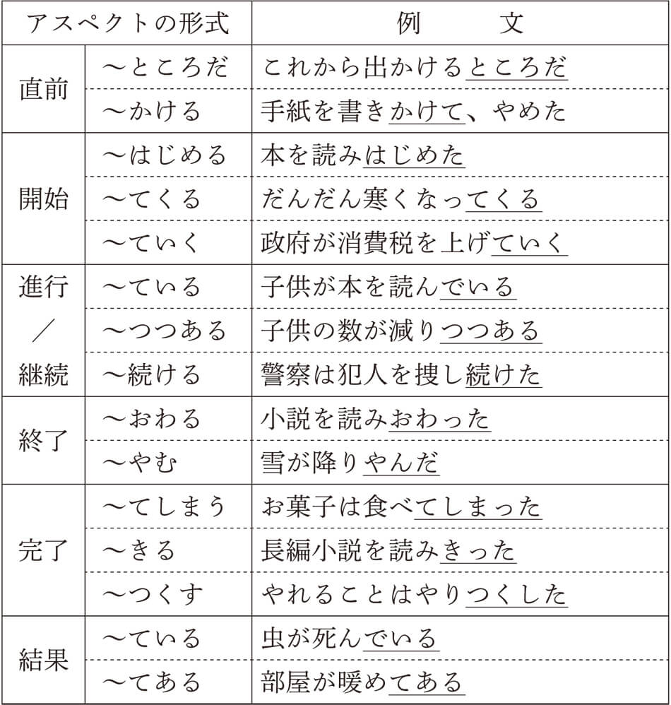このように、アスペクトの形式によって、動きの細かい段階が表されるようになり、出来事の描写のバラエティがぐんと増えるんですね。これらのなかから、アスペクトの代表的な形式である「～ている」と「～てある」について、見ていくことにします。
日本語のアスペクトの表現と言えば、真っ先に出てくるのが「～ている」という形式です。皆さんは、「～ている」と聞いたら、おそらく現在進行形を思い浮かべるでしょう。英語で言う、“be ～ing”という形式ですね。日本語と英語を比較するとわかりやすいので、見てみましょう。
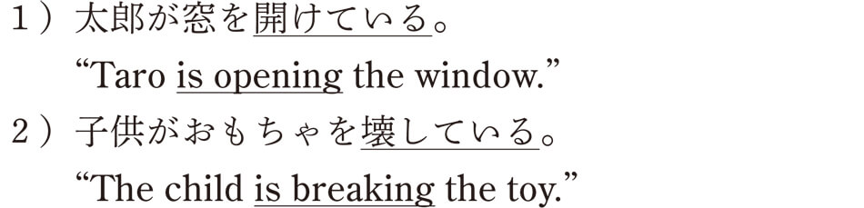このように、日本語の「～ている」は現在進行形として考えることができ、英語の“be ～ing”で置き換えることが可能です。一般の日本人はアスペクトなんて考えることはありませんので、ほとんどの人は、「～ている」＝「現在進行形」と考えているはずです。たぶん、これを読んでいるあなたもその一人ではないでしょうか。しかし、「～ている」は動作の進行をいつも表すわけではないんですよ。たとえば、次の例では、現在進行形というより、変化の結果を表しています。
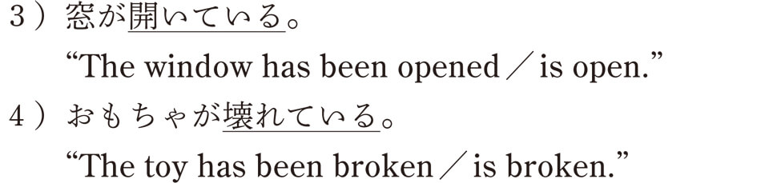３）であれば、窓が開いた後の結果の状態であり、４）であれば、おもちゃが壊れた後の結果の状態であると言えます。３）と４）の例では、明らかに動きの進行ではなく、ある変化の結果状態がつづいていることを表しているんですね。１）～４）の例文を時間軸のなかで考えるとわかりやすいので、見てください。
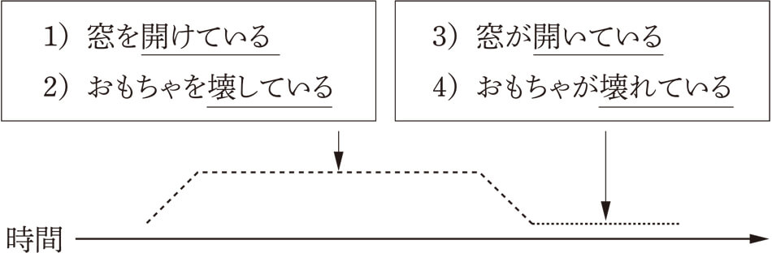どうして、同じ「～ている」の形式（テイル形）なのに、一方は動作の進行を、もう一方は変化の結果を表すんでしょうか。１）～４）の例文をよく見てください。何かに気づきませんか。そう、第３章で見た自動詞と他動詞の対応に関係しているんですね。１）と３）、２）と４）は自他のペアになっているでしょう。「開ける－開く」「壊す－壊れる」という対応ですね。せっかくですから、ちょっと自動詞と他動詞の対応について、おさらいしてみましょう。自動詞はある現象の変化の部分を、他動詞はその現象を引き起こす動作の部分を表しましたね。

そうすると、「～ている」が自動詞につくと変化が継続していることを、他動詞につくと動作が継続していることを表すと言えそうです。変化にとっての継続とは変化の結果状態であり、動作にとっての継続とは動作の進行になるんですね。この事実は、「～ている」の本質的な姿を暗示しています。どういうことかと言うと、動詞は変化や動作の動きをまとめて一つの出来事としてとらえましたね。つまり、動き全体をひとくくりにして見つめるマクロの視点でした。そのマクロの視点をミクロの視点に変え、動きのなかでの変化や動作の局面を表すのが、「～ている」なんですね。では、なぜ「～ている」が継続を表すのかということですが、「～ている」に使われる「いる」という動詞は、存在を表す状態動詞と言われています。つまり、誰かがいるという存在の状態を表すわけです。存在するということは、そのような状態がずっとつづいていることを意味します。そこから、この存在の状態を表す「いる」が補助的に使われると、動作や変化の継続面に焦点を当てることになるわけです。
話をもとに戻しましょう。「～ている」によって、進行形になるのか、変化の結果になるのかは、その動詞の種類によります。動作を表す動詞であれば、現在進行形、変化を表す動詞であれば、変化の結果ということになるのです。日本語文法では、このような動作を表す動詞のことを動作動詞、変化を表す動詞のことを変化動詞と呼んでいます。そうすると、この２つの動詞の見分け方は簡単ですよね。つまり、「～ている」をつけたときに、現在進行形になれば、動作動詞、変化の結果であれば、変化動詞と考えることができるわけです。ちょっと試してみましょうか。次の動詞は動作動詞でしょうか、変化動詞でしょうか。テイル形にして考えてみてください。
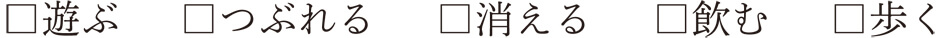「～ている」をつけて現在進行形の意味になるのは、「遊んでいる」「飲んでいる」「歩いている」ですね。だから、この３つの動詞は動作動詞です。これに対し、「つぶれている」「消えている」は変化の結果を表していますね。だから、変化動詞となるわけです。もちろんこの２つの動詞が現在進行形にならないとは言いませんが、スローモーションビデオでも見ていない限りは、進行形にはならないでしょう。
この分類の仕方は、私が言っているわけではなく、金田一春彦さんという国語学者がかれこれ60年以上も前に発表したものです。もっとも金田一さんは「継続動詞」と「瞬間動詞」と名づけたのですが、現在では動作動詞と変化動詞と考えることができます。
この先生はもう亡くなられたんですが、方言などに詳しく、誘拐事件があると、録音された犯人の言葉などから、どこの出身者かなどを言い当てたりして、なかなか有名な先生でした。ちなみに、お父様は金田一京助さんという、これまた著名な国語学者であったし、息子さんはよくテレビのクイズ番組やバラエティ番組に出演している金田一秀穂さんです。知っている方も多いのではないでしょうか。
話を元に戻しましょう。それで、この動作動詞と変化動詞ですが、第３章で説明した自動詞と他動詞の対応で考えると、基本的に他動詞は動作動詞、自動詞は変化動詞になるわけです。ただ、自他の対応のない動詞もあるわけですから、すべてに当てはまるわけではありません。たとえば、さっきやった問題の「遊ぶ」と「歩く」は自動詞ですが、動作動詞に分類されます。
ここまでで、アスペクトの表現である「～ている」の役割を確認することができましたね。それは、動詞が表す動きの継続面を描くということでした。動作であれば、現在進行形、変化であれば、変化の結果になったわけです。したがって、「～ている」とともに動作動詞は動作の進行を、変化動詞は変化の結果を表すということになるわけです。
「～ている」は動きの持続面を表すアスペクトで、動作動詞であればその動作が継続していることを、変化動詞であればその変化が継続していることを表すのを見ました。では、「～てある」はどのようなアスペクトを表すのでしょうか。「～てある」に補助動詞として使われている「ある」も「いる」と同様に存在の状態を表す状態動詞です。一般的に「いる」が生物の存在を表すのに対し、「ある」は無生物の存在を表します。
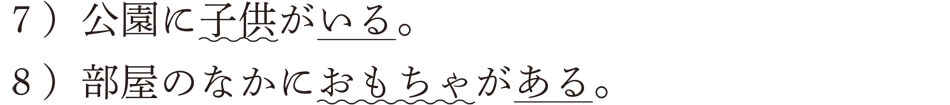「子供」は生物なので「いる」が、「おもちゃ」は無生物なので「ある」が使われているのです。このように、「ある」も存在の状態を表すことから、「～てある」も「～ている」と同様に、動きの持続面を表すアスペクトとなります。じゃあ、「～ている」とまったく同じじゃあないかと、思いますよね。だけど、ちょっと違うんですね。「ある」が表す存在主体は無生物でしたよね。無生物は自らは動くことができません。ということは、動きにかんして言えば、他者から働きかけを受けてはじめて動くことができるものなんですね。これは、よく考えると他動詞の目的語（対象）のことですよね。つまり、動作によって働きかけを受けた対象の変化の継続面を表すということになるわけです。たとえば、こんな具合です。
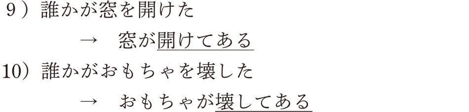「窓」も「おもちゃ」も誰かによって働きかけを受け、その結果、「窓」や「おもちゃ」に変化が生じるわけです。その変化が「～てある」によって表されるんですね。いずれも人間の動作によることから、意図性が感じられます。何らかの理由で、窓が開けてある、おもちゃが壊してある、という感じでしょうか。これが、「～ている」による、変化の結果との大きな違いです。もう一度、「～ている」の変化の結果とくらべてみましょう。
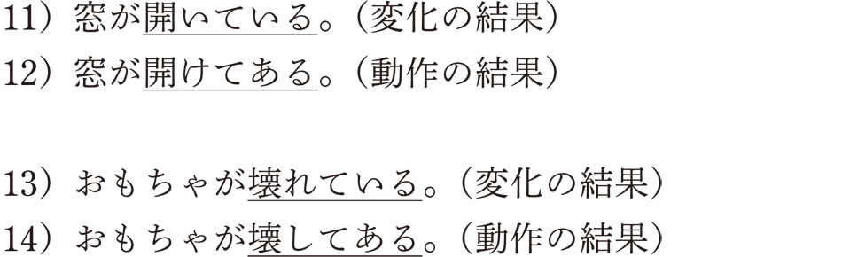くらべてみると、意味の違いがよくわかるでしょう。でも、視覚的な状況はまったく同じなんですね。ただ、使われている動詞には大きな違いがあります。「～ている」は自動詞であり、「～てある」は他動詞なんです。これは、自動詞は変化の部分だけを表すので、人間による変化であろうと、自然による変化であろうと、関係ないんですね。「～ている」はただ単にある変化が継続していることを表していて、人間の関与にかんしては不問なのです。これに対して、「～てある」は必ずある動作（他動詞）によって生じた変化を表すことから、意図性が感じられる表現となるわけです。
このことから、部屋のなかの様子を描写するとき、「～ている」でも「～てある」でも表現することができますが、意味合いはまったく異なったものになります。たとえば、「～ている」であれば、「カレンダーが掛かっている」「机が並んでいる」「電気が点いている」「窓が開いている」など、部屋のなかの状況を客観的に表現するのに適しています。一方、「～てある」では、「カレンダーが掛けてある」「机が並べてある」「電気が点けてある」「窓が開けてある」など、人間の関与を感じさせる状況を表すのに適しているんですね。随分とニュアンスが違いますよね。
このような「～ている」と「～てある」の表現の違いはたいへん興味深いものです。なぜかというと、私たちの周りにあるものを、自然にそのようになっているのか、人為的にそのようになっているのか、という観点から区別しているからです。
本書でも何度も触れているように、私たち日本人は人間の行為も自然界の営みの一つととらえ、自然に起きる変化と認識する傾向があります。たとえば、子供がスポーツをして服を汚したとします。その場合、「服が汚れている」というテイル形を使い、「服が汚してある」とは言わないでしょう。テアル形を使うと、わざと汚したという意味になってしまうからです。つまり、特別な意図でもない限り、通常の人間の行為であれば、テイル形が使われるんですね。「お茶が入ってる（入っている）よ」「風呂が沸いてる（沸いている）よ」「ご飯ができてる（できている）よ」など、自分でやった行為の結果ですらテイル形で表すことに、自然と共存する日本人の発想を垣間見ることができるのではないでしょうか。自動詞と他動詞の対応と同じように、「自動詞＋ている」と「他動詞＋てある」というアスペクトの対応もまた、自然中心か人間中心かの発想による表現の違いとしてとらえることができるんですね。
ここからは、言葉の面白さにも触れてほしいので、少し専門的になりますが、あえて説明したいと思います。じつは、ここまで見てきた「～ている」と「～てある」の対応は、自動詞と他動詞がペアになっている場合に限られたものでした。ペアとなる自動詞を持たない他動詞、つまり、無対他動詞が「～てある」に使われると、動作主の意図性の感じられない状況を表すことがあります。たとえば、
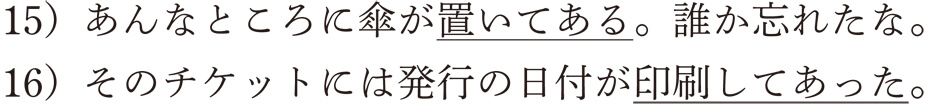などの文から、意図性を感じるでしょうか。あまり感じられないですよね。どういうことかと言うと、これらの動詞には対応する自動詞がないために、客観的な状況を表す方法がないからなんですね。そのために、「～てある」が「～ている」の中立的な状況を兼ねることになるんです。もちろん、「置く」も「印刷する」も意図的な状況を表すことができますよ。
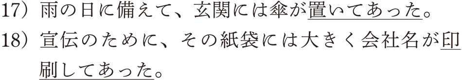では、無対自動詞はどうなんだろうと思いますよね。「～ている」で意図的な状況を兼ねるんでしょうか。じつは、無対自動詞の多くは無意志動詞（動作主が人間ではない動詞）なので、そのような意図性の伴う変化は表せないんです。ただ、無対自動詞のなかには人間が関わる動作があり、その場合、自動詞であっても「～てある」を使うことがあるんです。これについては、この後の項で説明したいと思います。今まで見てきた動詞の変化を表すアスペクトをまとめると、以下のようになります。
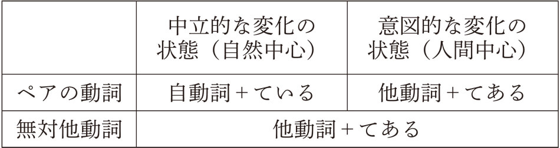この表を見て、面白いと感じませんか。表現できないところは、他の表現でカバーしていますね。第３章の自動詞と他動詞でも同じような現象がありましたが、覚えているでしょうか。無対自動詞に対応する他動詞は使役形が、無対他動詞に対応する自動詞は受身形が代用しましたよね。人間の体でも、ある部分がダメになると、他の部分が代わりに働いて、その機能を保つということがよくありますが、言葉の世界もまったく同じなんです。日本語のしくみを詳しく研究していると、その背景には必ず論理的で自然な法則が潜んでいるんです。日本語の世界にはまだまだ研究されていない未知の領域がたくさんあります。それを探して、パズルを解いていくことが、まさに筆者を含む日本語研究者にとっての醍醐味なんですね。
内容が少し専門的になってきたついでに、もう一つだけ説明させてください。基本的に「～てある」は意図的な結果の状態を表しましたが、動作主を表すことはできません。たとえば、太郎が窓を開けたとします。その結果状態である「窓が開けてある」に動作主を入れることはできませんね。「太郎によって窓が開けてある」とは言えないからです。しかし、動作主を表す方法があるんです。それは、動作主を主語にするんです。「太郎は窓を開けてある」というのはどうでしょうか。言えそうでしょう。この場合、変化の対象である「窓」はヲ格になり、動作主である「太郎」が主語（主題）になっています。テアル文は眼前描写文と言われ、実際に目の前にある変化を見て表現するのが普通です。したがって、変化の起きている対象が主語になるんですね。その場合、誰がそのような変化を起こしたのかはどうでもよく、誰かによって引き起こされた人為的な結果というのが、テアル文の基本的な姿でした。
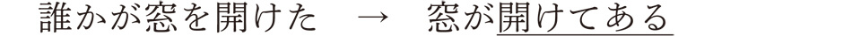しかし、その変化を引き起こした動作主を知っている場合、動作主を主語にしたテアル文が成立するんです。
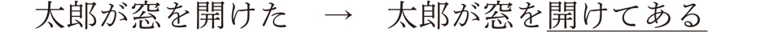この場合、話者は必ずしも「開いている窓」が存在する現場にいなくてもいいわけですね。太郎が窓を開けたということを知っていれば、たとえば、誰かが窓を開けるために部屋に行こうとするのを止め、「大丈夫、太郎が窓を開けてあるよ」と言うことができるはずです。つまり、動作主のあるテアル文は眼前描写文である必要がないんですね。このことから、この種のテアル文は、対象に変化が必ずしも起きていなくても、その動作主の行為がおこなわれたことを知っていれば成立するんです。
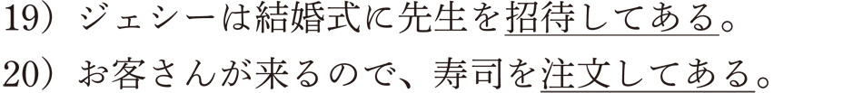いずれも、「ジェシーが先生を招待した」「（私が）寿司を注文した」という動作の結果が、ある目的のために保たれているという状況なんですね。このように、これらのテアル文では対象に必ずしも変化が起きているわけではないので、対象の存在は重要ではないんです。そうすると、対象のない自動詞のテアル文も可能になるわけです。たとえば、「走る」という自動詞であっても動作主の行為が何らかのために保たれている状況であれば、テアル文が成立します。
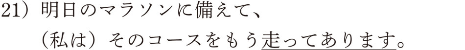ヲ格がありますが、通過点のヲ格ですので、「走る」は自動詞でしたね。このように、自動詞のテアル文も理論的に可能にはなりますが、筆者が実際に書かれた小説やエッセイなどを調査した結果では、ほとんど見つけることができませんでした。
このような動作主を主語にしたテアル文はテアル文全体の２割で、８割は対象を主語とするテアル文という調査結果が出ています。この数字をどのように考えるかは研究者によって異なりますが、完全に無視するほど少ない割合でないことはたしかでしょう。
最後に、「～ている」と「～てある」について、まとめると次の表のようになりますので、ご覧になってください。
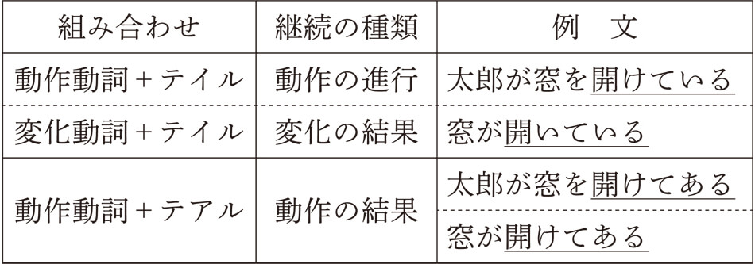「～ている」と「～てある」について、一般書として、ここまで説明する必要があるのか、少しためらいもありましたが、言葉のしくみの背景の一端を皆さんにも触れてほしいと思い、あえて説明することにしました。
▲